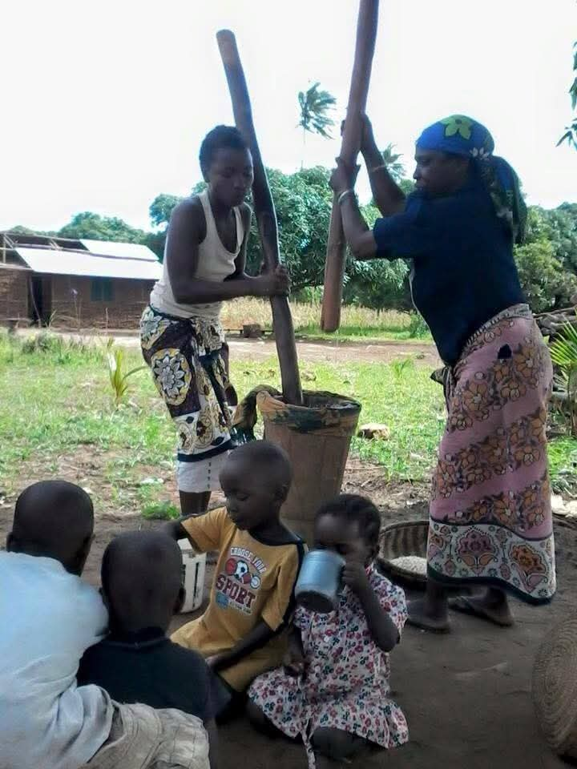
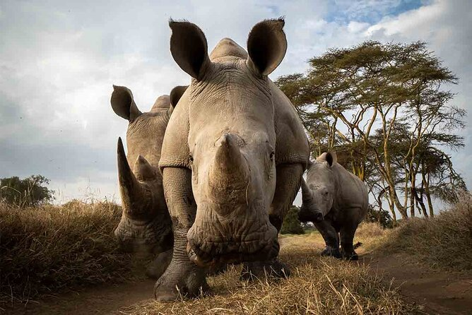

Scopri le meraviglie della costa del Kenya, tra mare cristallino, natura, cultura e autentiche tradizioni locali.
Prenota Ora
Ogni escursione è pensata per offrirti un'esperienza autentica, accompagnato da guide professionali e assistenza in lingua italiana. Esplora spiagge paradisiache, villaggi tradizionali, riserve naturali e siti storici della costa del Kenya.
Scopri una splendida isola di sabbia bianca, circondata dalle acque cristalline dell'Oceano Indiano. Un'esperienza perfetta per rilassarsi e vivere la bellezza della costa del Kenya.
Scopri di più
Naviga lentamente tra le affascinanti mangrovie di Mida Creek in canoa, circondato dalla natura e dalla tranquillità di uno degli ecosistemi più importanti della costa kenyota.
Scopri di più
Fai un viaggio nella storia del Kenya visitando le antiche rovine di Gede e scopri i resti di un'importante città della civiltà Swahili, immersa nella vegetazione tropicale.
Scopri di più
Scopri lo spettacolare canyon naturale di Marafa, conosciuto come Hell's Kitchen. Ammira le sue incredibili formazioni rocciose, i colori della terra e i panorami unici della costa del Kenya.
Scopri di più
Una giornata tra mare cristallino, spiagge dorate e natura incontaminata. Rilassati sulla costa, goditi il paesaggio e vivi una piacevole esperienza lontano dalla routine quotidiana.
Scopri di più
Vivi una giornata sul mare tra acque turchesi, mangrovie e paesaggi spettacolari. Un'esperienza ideale per scoprire la bellezza dell'Oceano Indiano e rilassarsi nella natura.
Scopri di più
Entra in contatto con la vita autentica delle comunità locali visitando i villaggi di Dabaso e Timboni. Scopri tradizioni, abitazioni e usanze della cultura della costa kenyota.
Scopri di più
Un viaggio straordinario nel Kenya settentrionale tra la spettacolare Riserva di Samburu e la famosa Ol Pejeta Conservancy, alla scoperta della fauna selvatica e dei grandi progetti di conservazione.
Scopri di piùNon trovi l'escursione che stai cercando? Contattaci e organizzeremo insieme un'esperienza perfetta per te.
Contattaci su WhatsApp